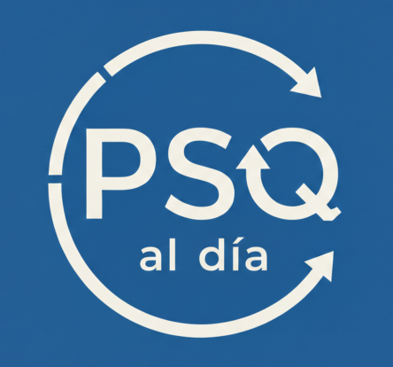

La herramienta definitiva para preparar tu plaza. Exámenes reales, explicaciones detalladas y control de tiempo.
No solo sabrás si has acertado; cada pregunta incluye explicaciones breves.
Accede a las convocatorias previas
¿Poco tiempo? Entrena con 10 preguntas rápidas seleccionadas al azar.